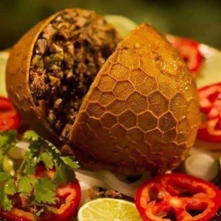

Buchada

Descrição
Buchada de bode é um prato típico da região Nordeste do Brasil. A iguaria tem origem da culinária portuguesa tradicional, que remete à expressão marrano, que significa excomungado, e que servia outrora para estigmatizar mouros e judeus.
Ingredientes (5 porções)
- 1 Kg de bucho de boi limpo
- 2 colheres de vinagre
- Corante
- Pimentão
- Tempero verde à vontade
- 2 limões
- Alho pilado com sal
- Cominho
- Cebola
Modo de Preparo
- Corte o bucho em pequenos pedaços e ferva em água com vinagre.
- Escorra e ferva novamente com água e limão, escorra.
- Leve ao fogo com água, alho, cominho e corante.
- Deixe cozinhar por 30 minutos, coloque o tempero restante e leve ao fogo novamente.
- Sirva quente e com arroz branco.